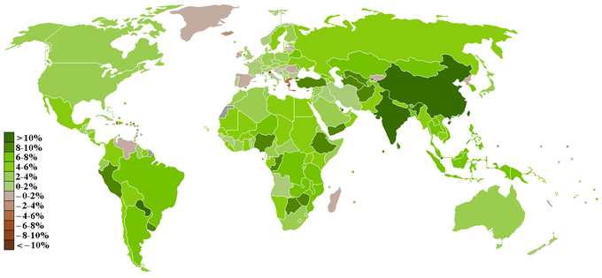
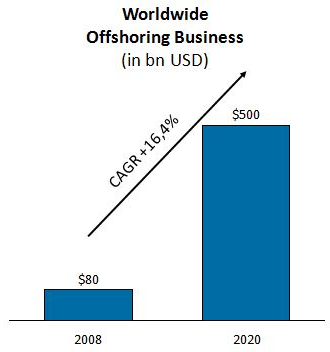
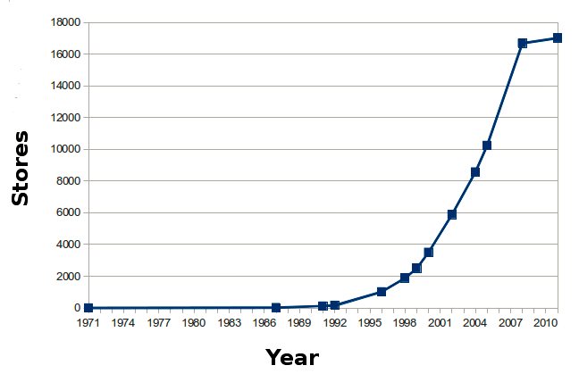
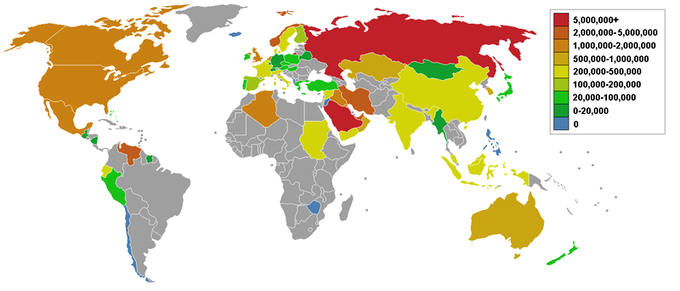
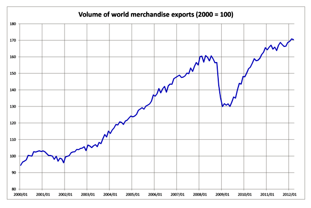
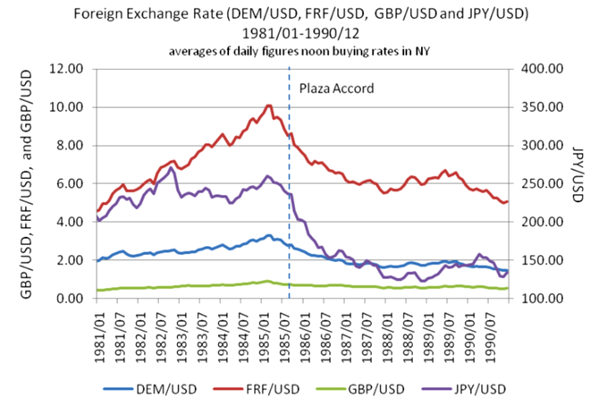
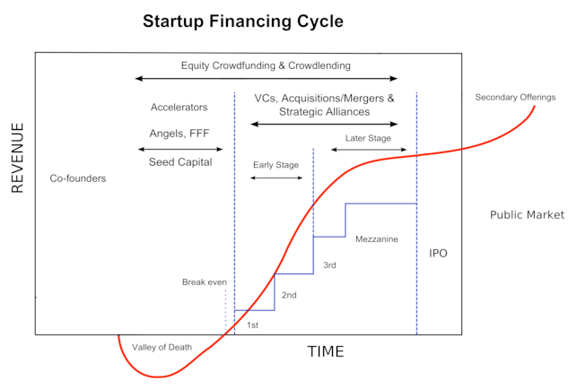

Table of Contents
21. Financial Management Outside of the U.S.
21.1. Types of International Business
21.1.1. Definition and Challenges of a Global Corporation
21.1.2. Countertrade
21.1.3. Multinational Firms
21.1.4. Direct Investment
21.1.5. Offshoring
21.1.6. Outsourcing
21.1.7. Licensing
21.1.8. Importing
21.1.9. Joint Ventures
21.1.10. Contract Manufacturing
21.1.11. Franchising
21.1.12. Exporting
21.2. The International Business Environment
21.2.1. Overview of the International Business Environment
21.3. Factors Impacting Exchange Rates
21.3.1. Overview of Exchange Rates
21.4. Types of Rates and Transactions
21.4.1. Spot Rates, Forward Rates, and Cross Rates
21.5. Managing Exchange Risk
21.5.1. Types of Exchange Exposure: Short-Run, Long-Run, and Translation
21.5.1. Types of Exchange Hedges: Forward, Money Market, and Future
21.6. International Investment and Finance
21.6.1. Funding the International Business
21. Financial Management Outside of the U.S.
21.1. Types of International Business
21.1.1. Definition and Challenges of a Global Corporation
Global corporations operate in two or more countries and face many challenges in their quest to capture value in the global market.
Learning Objective
Identify the most meaningful challenges encountered by multinational corporations (MNCs) when pursuing global markets and efficiencies
Key Points
- A multinational corporation (MNC) is present in several countries, which improves the company's ability to maintain market share and earn higher profits.
- As GDP growth migrates from mature economies, such as the US and EU member states, to developing economies, such as China and India, it becomes highly relevant to capture growth in higher growth markets.
- Despite the general opportunities a global market provides, there are significant challenges in penetrating these markets. These consist of public relations, ethics, corporate structure, and leadership.
- Combining these challenges with the inherent opportunities a global economy presents, companies are encouraged to pursue high value opportunities while carefully controlling the risks involved.
Key Terms
- economies of scope
- Lowering average cost for a firm in producing two or more products through the common and recurrent use of proprietary know-how or an indivisible physical asset.
- economies of scale
- The characteristics of a production process in which an increase in the scale of the firm causes a decrease in the long run average cost of each unit.
- value-chain
- The series of operations necessary for a business to operate.
Global Corporations
A global company is generally referred to as a multinational corporation (MNC). An MNC is a company that operates in two or more countries, leveraging the global environment to approach varying markets in attaining revenue generation. These international operations are pursued as a result of the strategic potential provided by technological developments, making new markets a more convenient and profitable pursuit both in sourcing production and pursuing growth.
International operations are therefore a direct result of either achieving higher levels of revenue or a lower cost structure within the operations or value-chain. MNC operations often attain economies of scale, through mass producing in external markets at substantially cheaper costs, or economies of scope, through horizontal expansion into new geographic markets. If successful, these both result in positive effects on the income statement (either larger revenues or stronger margins), but contain the innate risk in developing these new opportunities.
Opportunities
As gross domestic product (GDP) growth migrates from mature economies, such as the US and EU member states, to developing economies, such as China and India, it becomes highly relevant to capture growth in higher growth markets. is a particularly strong visual representation of the advantages a global corporation stands to capture, where the darker green areas reppresent where the highest GDP growth potential resides. High growth in the external environment is a strong opportunity for most incumbents in the market.
{kind=link}
This map highlights where the strongest growth opportunities currently are, as of 2010. In that year China and India had the highest GDP growth rates.
Challenges
However, despite the general opportunities a global market provides, there are significant challenges MNCs face in penetrating these markets. These challenges can loosely be defined through four factors:
- Public Relations: Public image and branding are critical components of most businesses. Building this public relations potential in a new geographic region is an enormous challenge, both in effectively localizing the message and in the capital expenditures necessary to create momentum.
- Ethics: Arguably the most substantial of the challenges faced by MNCs, ethics have historically played a dramatic role in the success or failure of global players. For example, Nike had its brand image hugely damaged through utilizing 'sweat shops' and low wage workers in developing countries. Maintaining the highest ethical standards while operating in developing countries is an important consideration for all MNCs.
- Organizational Structure: Another significant hurdle is the ability to efficiently and effectively incorporate new regions within the value chain and corporate structure. International expansion requires enormous capital investments in many cases, along with the development of a specific strategic business unit (SBU) in order to manage these accounts and operations. Finding a way to capture value despite this fixed organizational investment is an important initiative for global corporations.
- Leadership: The final factor worth noting is attaining effective leaders with the appropriate knowledge base to approach a given geographic market. There are differences in strategies and approaches in every geographic location worldwide, and attracting talented managers with high intercultural competence is a critical step in developing an efficient global strategy.
Combining these four challenges for global corporations with the inherent opportunities presented by a global economy, companies are encouraged to chase the opportunities while carefully controlling the risks to capture the optimal amount of value. Through effectively maintaining ethics and a strong public image, companies should create strategic business units with strong international leadership in order to capture value in a constantly expanding global market.
21.1.2. Countertrade
Countertrade is a system of exchange in which goods and services are used as payment rather than money.
Learning Objective
Explain the various methods of countertrading
Key Points
- Countertrade is the exchange of goods or services for other goods or services. This system can be typified as simple bartering, switch trading, counter purchase, buyback, or offset.
- Switch trading: Party A and B are countertrading salt for sugar. Party A may switch its obligation to pay Party B to a third party, known as the switch trader. The switch trader gets the sugar from Party B at a discount and sells it for money. The money is used as Party A's payment to Party B.
- Counter purchase: Party A sells salt to Party B. Party A promises to make a future purchase of sugar from Party B.
- Buyback: Party A builds a salt processing plant in Country B, providing capital to this developing nation. In return, Country B pays Party A with salt from the plant.
- Offset agreement: Party A and Country B enter a contract where Party A agrees to buy sugar from Country B to manufacture candy. Country B then buys that candy.
Key Terms
- Switch trading
- Practice in which one company sells to another its obligation to make a purchase in a given country.
- counter purchase
- Sale of goods and services to one company in another country by a company that promises to make a future purchase of a specific product from the same company in that country.
- barter
- The exchange of goods or services without involving money.
Examples
- Bartering: One party gives salt in exchange for sugar from another party.
- Switch trading: Party A and Party B are countertrading salt for sugar. Party A may switch its obligation to pay Party B to a third party, known as the switch trader. The switch trader gets the sugar from Party B at a discount and sells it for money. The money is used as Party A's payment to Party B.
- Counter purchase: Party A sells salt to Party B. Party A promises to make a future purchase of sugar from Party B.
- Buyback: Party A builds a salt processing plant in Country B, providing capital to this developing nation. In return, Country B pays Party A with salt from the plant.
- Offset agreement: Party A and Country B enter a contract where Party A agrees to buy sugar from Country B to manufacture candy. Country B then buys that candy.
Countertrade means exchanging goods or services which are paid for, in whole or part, with other goods or services, rather than with money. A monetary valuation can, however, be used in counter trade for accounting purposes. Any transaction involving exchange of goods or service for something of equal value. Bartering involves exchanging goods or services for other goods or services as payment.
There are five main variants of countertrade:
- Barter: Exchange of goods or services directly for other goods or services without the use of money as means of purchase or payment.
- Switch trading: Practice in which one company sells to another its obligation to make a purchase in a given country.
- Counter purchase: Sale of goods and services to one company in aother country by a company that promises to make a future purchase of a specific product from the same company in that country.
- Buyback: This occurs when a firm builds a plant in a country, or supplies technology, equipment, training, or other services to the country, and agrees to take a certain percentage of the plant's output as partial payment for the contract.
- Offset: Agreement that a company will offset a hard currency purchase of an unspecified product from that nation in the future. Agreement by one nation to buy a product from another, subject to the purchase of some or all of the components and raw materials from the buyer of the finished product, or the assembly of such product in the buyer nation.
Countertrade also occurs when countries lack sufficient hard currency or when other types of market trade are impossible. In 2000, India and Iraq agreed on an "oil for wheat and rice" barter deal, subject to UN approval under Article 50 of the UN Persian Gulf War sanctions, that would facilitate 300,000 barrels of oil delivered daily to India at a price of \$6.85 a barrel, while Iraq oil sales into Asia were valued at about \$22 a barrel. In 2001, India agreed to swap 1.5 million tonnes of Iraqi crude under the oil-for-food program.
21.1.3. Multinational Firms
With the advent of improved communication and technology, corporations have been able to expand into multiple countries.
Learning Objective
Explain how a multinational corporation (MNC) operates
Key Points
- Multinational corporations operate in multiple countries.
- MNCs have considerable bargaining power and may negotiate business or trade policies with success.
- A corporation may choose to locate in a special economic zone, a geographical region that has economic and other laws that are more free-market-oriented than a country's typical or national laws.
Key Term
- Multinational corporation
- A corporation or enterprise that operates in multiple countries.
Example
- McDonalds operates in over 119 different countries, making it a fairly large MNC by any standard
A multinational corporation (MNC) or multinational enterprise (MNE) is a corporation registered in more than one country or has operations in more than one country. It is a large corporation which both produces and sells goods or services in various countries . It can also be referred to as an international corporation. The first multinational corporation was the Dutch East India Company, founded March 20, 1602.
Corporations may make a foreign direct investment. Foreign direct investment is direct investment into one country by a company located in another country. Investors buy a company in the country or expand operations of an existing business in the country.
A corporation may choose to locate in a special economic zone, a geographical region with economic and other laws that are more free-market-oriented than a country's typical or national laws.
Multinational corporations are important factors in the processes of globalization. National and local governments often compete against one another to attract MNC facilities, with the expectation of increased tax revenue, employment and economic activity. To compete, political powers push toward greater autonomy for corporations. MNCs play an important role in developing economies of developing countries.
Many economists argue that in countries with comparatively low labor costs and weak environmental and social protection, multinationals actually bring about a "race to the top." While multinationals will see a low tax burden or low labor costs as an element of comparative advantage, MNC profits are tied to operational efficiency, which includes a high degree of standardization. Thus, MNCs are likely to adapt production processes in many of their operations to conform to the standards of the most rigorous jurisdiction in which they operate.
As for labor costs, while MNCs pay workers in developing countries far below levels in countries where labor productivity is high (and accordingly, will adopt more labor-intensive production processes), they also tend to pay a premium over local labor rates of 10% to 100%.
Finally, depending on the nature of the MNC, investment in any country reflects a desire for a medium- to long-term return, as establishing a plant, training workers and so on can be costly. Therefore, once established in a jurisdiction, MNCs are potentially vulnerable to arbitrary government intervention like expropriation, sudden contract renegotiation and the arbitrary withdrawal or compulsory purchase of licenses. Thus both the negotiating power of MNCs and the "race to the bottom" critique may be overstated while understating the benefits (besides tax revenue) of MNCs becoming established in a jurisdiction.
21.1.4. Direct Investment
FDI is practiced by companies in order to benefit from cheaper labor costs, tax exemptions, and other privileges in that foreign country.
Learning Objective
Explain the effects of foreign direct investment (FDI) for the investor and the host country
Key Points
- FDI is the flow of investments from one company to production in a foreign nation, with the purpose of lowering labor costs and gaining tax incentives.
- FDI can help the economic situations of developing countries, as well as facilitate progressive internal policy reforms.
- A major contributing factor to increasing FDI flow was internal policy reform relating to trade openness and participation in international trade agreements and institutions.
Key Term
- Foreign direct investment
- investment directly into production in a country by a company located in another country, either by buying a company in the target country or by expanding operations of an existing business in that country.
Example
- Intel is headquartered in the United States, but it has made foreign direct investments in a number of Southeast Asian countries where they produce components of their products in Intel-owned factories.
Foreign direct investment (FDI) is investment into production in a country by a company located in another country, either by buying a company in the target country or by expanding operations of an existing business in that country.
FDI is done for many reasons including to take advantage of cheaper wages in the country, special investment privileges, such as tax exemptions, offered by the country as an incentive to gain tariff-free access to the markets of the country or the region. FDI is in contrast to portfolio investment which is a passive investment in the securities of another country, such as stocks and bonds.
One theory for how to best help developing countries, is to increase their inward flow of FDI. However, identifying the conditions that best attract such investment flow is difficult, since foreign investment varies greatly across countries and over time. Knowing what has influenced these decisions and the resulting trends in outcomes can be helpful for governments, non-governmental organizations, businesses, and private donors looking to invest in developing countries.
A study from scholars at Duke University and Princeton University published in the American Journal of Political Science, "The Politics of Foreign Direct Investment into Developing Countries: Increasing FDI through International Trade Agreements," examines trends in FDI from 1970 to 2000 in 122 developing countries to assess what the best conditions are for attracting investment. The study found the major contributing factor to increasing FDI flow was internal policy reform relating to trade openness and participation in international trade agreements and institutions. The researchers conclude that, while "democracy can be conducive to international cooperation," the strongest indicator for higher inward flow of FDI for developing countries was the number of trade agreements and institutions to which they were party.
21.1.5. Offshoring
Offshoring entails a company moving a business process from one country to another.
Learning Objective
Explain the benefits of offshoring
Key Points
- Offshoring is the relocation of certain business processes from one country to the other, resulting in large tax breaks and lower labor costs.
- Offshoring can cause controversy in a company's domestic country since it is perceived to impact the domestic employment situation negatively.
- Offshoring of a company's services that were previously produced domestically can be advantageous in lowering operation costs, but has incited some controversy over the economic implications.
Key Terms
- offshoring
- The location of a business in another country for tax purposes.
- outsourcing
- The transfer of a business function to an external service provider.
- captive
- held prisoner; not free; confined
"Offshoring" is a company's relocation of a business process from one country to another. This typically involves an operational process, such as manufacturing, or a supporting process, such as accounting. Even state governments employ offshoring. More recently, offshoring has been associated primarily with the sourcing of technical and administrative services that support both domestic and global operations conducted outside a given home country by means of internal (captive) or external (outsourcing) delivery models.The subject of offshoring, also known as "outsourcing," has produced considerable controversy in the United States. Offshoring for U.S. companies can result in large tax breaks and low-cost labor.
{kind=link}
The worldwide offshoring business is projected to equal \$500 billion by 2020.
Offshoring can be seen in the context of either production offshoring or services offshoring. After its accession to the World Trade Organization (WTO) in 2001, the People's Republic of China emerged as a prominent destination for production offshoring. Another focus area includes the software industry as part of Global Software Development and the development of Global Information Systems. After technical progress in telecommunications improved the possibilities of trade in services, India became a leader in this domain; however, many other countries are now emerging as offshore destinations.
The economic logic is to reduce costs. People who can use some of their skills more cheaply than others have a comparative advantage. Countries often strive to trade freely items that are of the least cost to produce.
Related terms include "nearshoring," "inshoring," and "bestshoring," otherwise know as "rightshoring." Nearshoring is the relocation of business processes to (typically) lower cost foreign locations that are still within close geographical proximity (for example, shifting United States-based business processes to Canada/Latin America). Inshoring entails choosing services within a country, while bestshoring entails choosing the "best shore" based on various criteria. Business process outsourcing (BPO) refers to outsourcing arrangements when entire business functions (such as Finance & Accounting and Customer Service) are outsourced. More specific terms can be found in the field of software development; for example, Global Information System as a class of systems being developed for/by globally distributed teams.
21.1.6. Outsourcing
Outsourcing business functions to developing foreign countries has become a popular way for companies to reduce cost.
Learning Objective
Explain why companies outsource
Key Points
- Outsourcing is the contracting of business processes to external firms, usually in developing countries where labor costs are cheaper.
- This practice has increased in prevalence due to better technology and improvements in the educational standards of the countries to which jobs are outsourced.
- The opposite of outsourcing is called insourcing, and it is sometimes accomplished via vertical integration. However, a business can provide a contract service to another business without necessarily insourcing that business process.
Key Terms
- insourcing
- The obtaining of goods or services using domestic resources or employees as opposed to foreign.
- outsourcing
- The transfer of a business function to an external service provider.
- offshoring
- The location of a business in another country for tax purposes.
Example
- Corporations may outsource their helpdesk or customer service functions to 3rd party call centers in foreign countries because these skilled laborers can do these jobs at a lesser cost than their equivalents in the domestic country.
Outsourcing
Overview
Outsourcing is the contracting out of a business process, which an organization may have previously performed internally or has a new need for, to an independent organization from which the process is purchased back as a service. Though the practice of purchasing a business function—instead of providing it internally—is a common feature of any modern economy, the term outsourcing became popular in America near the turn of the 21st century. An outsourcing deal may also involve transfer of the employees and assets involved to the outsourcing business partner. The definition of outsourcing includes both foreign or domestic contracting , which may include offshoring, described as "a company taking a function out of their business and relocating it to another country. Outsourcing is the process of contracting an existing business process to an independent organization. The process is purchased as a service.
The opposite of outsourcing is called insourcing, and it is sometimes accomplished via vertical integration. However, a business can provide a contract service to another business without necessarily insourcing that business process.
Reasons for Outsourcing
Companies outsource to avoid certain types of costs. Among the reasons companies elect to outsource include avoidance of burdensome regulations, high taxes, high energy costs, and unreasonable costs that may be associated with defined benefits in labor union contracts and taxes for government mandated benefits. Perceived or actual gross margin in the short run incentivizes a company to outsource. With reduced short run costs, executive management sees the opportunity for short run profits while the income growth of the consumers base is strained. This motivates companies to outsource for lower labor costs. However, the company may or may not incur unexpected costs to train these overseas workers. Lower regulatory costs are an addition to companies saving money when outsourcing.
Import marketers may make short run profits from cheaper overseas labor and currency mainly in wealth consuming sectors at the long run expense of an economy's wealth producing sectors straining the home county's tax base, income growth, and increasing the debt burden. When companies offshore products and services, those jobs may leave the home country for foreign countries at the expense of the wealth producing sectors. Outsourcing may increase the risk of leakage and reduce confidentiality, as well as introduce additional privacy and security concerns.
21.1.7. Licensing
When considering strategic entry into an international market, licensing is a low-risk and relatively fast foreign market entry tactic.
Learning Objective
Identify the benefits and risks associated with licensing as a foreign market entry model
Key Points
- Foreign market entry options include exporting, joint ventures, foreign direct investment, franchising, licensing, and various other forms of strategic alliance.
- Of these potential entry models, licensing is relatively low risk in terms of time, resources, and capital requirements.
- Advantages of licensing include localization through a foreign partner, adherence to strict international business regulations, lower costs, and the ability to move quickly.
- Disadvantages to this entry mode include loss of control, potential quality assurance issues in the foreign market, and lower returns due to lower risk.
- When deciding to license abroad, careful due diligence should be done to ensure that the licensee is a strong investment for the licensor and vice versa.
Key Terms
- licensee
- In a licensing relationship, the buyer of the produce, service, brand or technology being licensed.
- licensor
- In a licensing relationship, the owner of the produce, service, brand or technology being licensed.
When considering entering international markets, there are some significant strategic and tactical decisions to be made. Exporting, joint ventures, direct investment, franchising, licensing, and various other forms of strategic alliance can be considered as market entry modes. Each entry mode has different pros and cons, addressing issues like cost, control, speed to market, legal barriers, and cultural barriers with different degrees of efficiency.
What is Licensing
A licensor (i.e. the firm with the technology or brand) can provide their products, services, brand and/or technology to a licensee via an agreement. This agreement will describe the terms of the strategic alliance, allowing the licensor affordable and low risk entry to a foreign market while the licensee can gain access to the competitive advantages and unique assets of another firm. This is potentially a strong win-win arrangement for both parties, and is a relatively common practice in international business.
Let's consider an example. The licensor is a company involved in energy health drinks. Due to food import regulations in Japan, the licensor cannot sell the product at local wholesalers or retailers. In order to circumvent this strategic barrier, the licensor finds a local sports drink manufacturer to license their recipe to. In exchange, the licensee sells the product locally under a local brand name and kicks back 15% of the overall revenues to the licensor.
The Pros and Cons
Before deciding to use licensing as an entry strategy, it's important to understand in which situations licensing is best suited.
Advantages
Licensing affords new international entrants with a number of advantages:
- Licensing is a rapid entry strategy, allowing almost instant access to the market with the right partners lined up.
- Licensing is low risk in terms of assets and capital investment. The licensee will provide the majority of the infrastructure in most situations.
- Localization is a complex issue legally, and licensing is a clean solution to most legal barriers to entry.
- Cultural and linguistic barriers are also significant challenges for international entries. Licensing provides critical resources in this regard, as the licensee has local contacts, mastery of local language, and a deep understanding of the local market.
Disadvantages
While the low-cost entry and natural localization are definite advantages, licensing also comes with some opportunity costs:
- Loss of control is a serious disadvantage in a licensing situation in regards to quality control. Particularly relevant is the licensing of a brand name, as any quality control issue on behalf of the licensee will impact the licensor's parent brand.
- Depending on an international partner also creates inherent risks regarding the success of that firm. Just like investing in an organization in the stock market, licensing requires due diligence regarding which organization to partner with.
- Lower revenues due to relying on an external party is also a key disadvantage to this model. (Lower risk, lower returns.)
21.1.8. Importing
Imports are the inflow of goods and services into a country's market for consumption.
Learning Objective
Explain the methodology behind the selection of products to import
Key Points
- A country specializes in the export of goods for which it has a comparative advantage and imports those for which it has a comparative disadvantage. By doing so, the country can increase its welfare.
- Comparative advantage describes the ability of a country to produce one specific good more efficiently than other goods.
- A country enhances its welfare by importing a broader range of higher-quality goods and services at lower cost than it could produce domestically.
Key Terms
- import
- To bring (something) in from a foreign country, especially for sale or trade.
- comparative advantage
- The concept that a certain good can be produced more efficiently than others due to a number of factors, including productive skills, climate, natural resource availability, and so forth.
Example
- A country in certain tropical areas of the world has a comparative advantage at growing crops like sugar or coffee beans, but it would be much less efficient at growing wheat (due to the climate). Therefore, they should export their sugar/coffee beans and import wheat at a lower cost than trying to grow wheat themselves.
The term "import" is derived from the concept of goods and services arriving into the port of a country. The buyer of such goods and services is referred to as an "importer" and is based in the country of import whereas the overseas-based seller is referred to as an "exporter." Thus, an import is any good (e.g. a commodity) or service brought in from one country to another country in a legitimate fashion, typically for use in trade. It is a good that is brought in from another country for sale.
Imported goods or services are provided to domestic consumers by foreign producers. An import in the receiving country is an export to the sending country. Imports, along with exports, form the basics of international trade. Import of goods normally requires the involvement of customs authorities in both the country of import and the country of export; those goods are often subject to import quotas, tariffs, and trade agreements. While imports are the set of goods and services imported, "imports" also means the economic value of all goods and services that are imported.
Imports are the inflow of goods and services into a country's market for consumption. A country enhances its welfare by importing a broader range of higher-quality goods and services at lower cost than it could produce domestically. Comparative advantage is a concept often applied to importing and exporting. Comparative advantage is the concept that a country should specialize in the production and export of those goods and services that it can produce more efficiently than other goods and services, and that it should import those goods and services in which it has a comparative disadvantage.
21.1.9. Joint Ventures
In a joint venture business model, two or more parties agree to invest time, equity, and effort for the development of a new shared project.
Learning Objective
Outline the dynamics of a joint venture
Key Points
- Joint business ventures involve two parties contributing their own equity and resources to develop a new project. The enterprise, revenues, expenses and assets are shared by the involved parties.
- Since money is involved in a joint venture, it is necessary to have a strategic plan in place.
- As the cost of starting new projects is generally high, a joint venture allows both parties to share the burden of the project as well as the resulting profits.
Key Term
- joint venture
- A cooperative partnership between two individuals or businesses in which profits and risks are shared.
Example
- Sony Ericsson is a joint venture between Swedish telecom corporation Ericsson and Japanese electronics manufacturer Sony to develop cellular devices.
Joint Ventures
A joint venture is a business agreement in which parties agree to develop a new entity and new assets by contributing equity. They exercise control over the enterprise and consequently share revenues, expenses and assets.
When two or more persons come together to form a partnership for the purpose of carrying out a project, this is called a joint venture. In this scenario, both parties are equally invested in the project in terms of money, time and effort to build on the original concept. While joint ventures are generally small projects, major corporations use this method to diversify. A joint venture can ensure the success of smaller projects for those that are just starting in the business world or for established corporations. Since the cost of starting new projects is generally high, a joint venture allows both parties to share the burden of the project as well as the resulting profits.
Since money is involved in a joint venture, it is necessary to have a strategic plan in place. In short, both parties must be committed to focusing on the future of the partnership rather than just the immediate returns. Ultimately, short term and long term successes are both important.To achieve this success, honesty, integrity and communication within the joint venture are necessary.
A consortium JV (also known as a cooperative agreement) is formed when one party seeks technological expertise, franchise and brand-use agreements, management contracts, and rental agreements for one-time contracts. The JV is dissolved when that goal is reached. Some major joint ventures include Dow Corning, MillerCoors, Sony Ericsson, Penske Truck Leasing, Norampac, and Owens-Corning.
21.1.10. Contract Manufacturing
In contract manufacturing, a hiring firm makes an agreement with the contract manufacturer to produce and ship the hiring firm's goods.
Learning Objective
Compare the benefits and risks of employing a contract manufacturer (CM)
Key Points
- A hiring firm may enter a contract with a contract manufacturer (CM) to produce components or final products on behalf of the hiring firm for some agreed-upon price.
- There are many benefits to contract manufacturing, and companies are finding many reasons why they should be outsourcing their production to other companies.
- Production outside of the company does come with many risks attached. Companies must first identify their core competencies before deciding about contract manufacture.
Key Terms
- Contract manufacturing
- a business model where a firm hires another firm to produce components or products
- Contract manufacturing
- Business model in which a firm hires a contract manufacturer to produce components or final products based on the hiring firm's design.
A contract manufacturer ("CM") is a manufacturer that enters into a contract with a firm to produce components or products for that firm. It is a form of outsourcing. In a contract manufacturing business model, the hiring firm approaches the contract manufacturer with a design or formula. The contract manufacturer will quote the parts based on processes, labor, tooling, and material costs. Typically a hiring firm will request quotes from multiple CMs. After the bidding process is complete, the hiring firm will select a source, and then, for the agreed-upon price, the CM acts as the hiring firm's factory, producing and shipping units of the design on behalf of the hiring firm.
Benefits
Contract manufacturing offers a number of benefits:
- Cost Savings: Companies save on their capital costs because they do not have to pay for a facility and the equipment needed for production. They can also save on labor costs such as wages, training, and benefits. Some companies may look to contract manufacture in low-cost countries, such as China, to benefit from the low cost of labor.
- Mutual Benefit to Contract Site: A contract between the manufacturer and the company it is producing for may last several years. The manufacturer will know that it will have a steady flow of business at least until that contract expires.
- Advanced Skills: Companies can take advantage of skills that they may not possess, but the contract manufacturer does. The contract manufacturer is likely to have relationships formed with raw material suppliers or methods of efficiency within their production.
- Quality: Contract Manufacturers are likely to have their own methods of quality control in place that help them to detect counterfeit or damaged materials early.
- Focus: Companies can focus on their core competencies better if they can hand off base production to an outside company.
- Economies of Scale: Contract Manufacturers have multiple customers that they produce for. Because they are servicing multiple customers, they can offer reduced costs in acquiring raw materials by benefiting from economies of scale. The more units there are in one shipment, the less expensive the price per unit will be.
Risks
Balanced against the above benefits of contract manufacturing are a number of risks:
- Lack of Control: When a company signs the contract allowing another company to produce their product, they lose a significant amount of control over that product. They can only suggest strategies to the contract manufacturer; they cannot force them to implement those strategies.
- Relationships: It is imperative that the company forms a good relationship with its contract manufacturer. The company must keep in mind that the manufacturer has other customers. They cannot force them to produce their product before a competitor's. Most companies mitigate this risk by working cohesively with the manufacturer and awarding good performance with additional business.
- Quality: When entering into a contract, companies must make sure that the manufacturer's standards are congruent with their own. They should evaluate the methods in which they test products to make sure they are of good quality. The company has to ensure the contract manufacturer has suppliers that also meet these standards.
- Intellectual Property Loss: When entering into a contract, a company is divulging their formulas or technologies. This is why it is important that a company not give out any of its core competencies to contract manufacturers. It is very easy for an employee to download such information from a computer and steal it. The recent increase in intellectual property loss has corporate and government officials struggling to improve security. Usually, it comes down to the integrity of the employees.
- Outsourcing Risks: Although outsourcing to low-cost countries has become very popular, it does bring along risks such as language barriers, cultural differences, and long lead times. This could make the management of contract manufacturers more difficult, expensive, and time-consuming.
- Capacity Constraints: If a company does not make up a large portion of the contract manufacturer's business, they may find that they are de-prioritized over other companies during high production periods. Thus, they may not obtain the product they need when they need it.
- Loss of Flexibility and Responsiveness: Without direct control over the manufacturing facility, the company will lose some of its ability to respond to disruptions in the supply chain. It may also hurt their ability to respond to demand fluctuations, risking their customer service levels.
21.1.11. Franchising
Franchising enables organizations a low cost and localized strategy to expanding to international markets, while offering local entrepreneurs the opportunity to run an established business.
Learning Objective
Examine the benefits of international franchising
Key Points
- A franchise agreement is defined as the franchiser granting an entrepreneur or local company (the franchisee) access to its brand, trademarks, and products.
- Franchising is designed to enable large organizations rapid access to new markets with relatively low barriers to entry.
- Advantages of franchising (for the franchiser) include low costs of entry, a localized workforce (culturally and linguistically), and a high speed method of market entry.
- Disadvantages of franchising (for the franchiser) include loss of some organizational and brand control, as well as relatively lower returns than other strategic entry models (albeit, with lower risk).
Key Terms
- franchisee
- A holder of a franchise; a person who is granted a franchise.
- franchiser
- A franchisor, a company or person who grants franchises.
What is Franchising?
In franchising, an organization (the franchiser) has the option to grant an entrepreneur or local company (the franchisee) access to its brand, trademarks, and products.
In this arrangement, the franchisee will take the majority of the risk in opening a new location (e.g. capital investments) while gaining the advantage of an already established brand name and operational process. In exchange, the franchisee will pay a certain percentage of the profits of the venture back to the franchiser. The franchiser will also often provide training, advertising, and assistance with products.
Why Franchise
Lower Barriers to Entry
Franchising is a particularly useful practice when approaching international markets. For the franchiser, international expansion can be both complex and expensive, particularly when the purchase of land and building of facilities is necessary. With legal, cultural, linguistics, and logistical barriers to entry in various global markets, the franchising model offers and simpler, cleaner solution that can be implemented relatively quickly.
Localization
Franchising also allows for localization of the brand, products, and distribution systems. This localization can cater to local tastes and language through empowering locals to own, manage, and employ the business. This high level of integration into the new location can create significant advantages compared to other entry models, with much lower risk.
Speed
It is also worth noting that franchising is a very efficient, low cost and quickly implemented expansionary strategy. Franchising requires very little capital investment on behalf of the parent company, and the time and effort of building the stores are similar outsources to the franchisee. As a result, franchising can be a way to rapidly expand both domestically and globally.
{kind=link}
Starbucks operates with a wide variety of strategic alliances, including a franchising program.
Downsides to Franchising
Franchising has some weaknesses as well, from a strategic point of view. Most importantly, organizations (the franchisers) lose a great deal of control. Quality assurance and protection of the brand is much more difficult when ownership of the franchise is external to the organization itself. Choosing partners wisely and equipping them with the tools necessary for high levels of quality and alignment with the brand values is critical (e.g., training, equipment, quality control, adequate resources).
It is also of importance to keep the risk/return ratio in mind. While the risk of franchising is much lower in terms of capital investment, so too is the returns derived from operations (depending on the franchising agreement in place). While it is a faster and cheaper mode of entry, it ultimately results in a profit share between the franchiser and the franchisee.
21.1.12. Exporting
Exporting is the practice of shipping goods from the domestic country to a foreign country.
Learning Objective
Explain how exports are accounted for in international trade
Key Points
- This term export is derived from the conceptual meaning as to ship the goods and services out of the port of a country.
- In national accounts "exports" consist of transactions in goods and services (sales, barter, gifts or grants) from residents to non-residents.
- Statistics on international trade do not record smuggled goods or flows of illegal services. A small fraction of the smuggled goods and illegal services may nevertheless be included in official trade statistics through dummy shipments that serve to conceal the illegal nature of the activities.
Key Terms
- export
- to sell (goods) to a foreign country
- import
- To bring (something) in from a foreign country, especially for sale or trade.
- exporting
- the sale of capital, goods, and services across international borders or territories
- exporting
- the act of selling to a foreign country
Example
- When individuals from Country A purchase goods from Country B, this process is known as exporting for Country B (since their goods are being sold) and importing for Country A (since they are buying the goods).
This term "export" is derived from the concept of shipping goods and services out of the port of a country . The seller of such goods and services is referred to as an "exporter" who is based in the country of export whereas the overseas based buyer is referred to as an "importer". In international trade, exporting refers to selling goods and services produced in the home country to other markets.
{kind=link}
The map shows barrels of oil exported per day in 2006. Russia and Saudi Arabia exported more barrels than any other oil-exporting countries.
Export of commercial quantities of goods normally requires the involvement of customs authorities in both the country of export and the country of import. The advent of small trades over the internet such as through Amazon and eBay has largely bypassed the involvement of customs in many countries because of the low individual values of these trades. Nonetheless, these small exports are still subject to legal restrictions applied by the country of export. An export's counterpart is an import.
In national accounts, exports consist of transactions in goods and services (sales, barter, gifts, or grants) from residents to non-residents.The exact definition of exports includes and excludes specific "borderline" cases. A general delimitation of exports in national accounts is as follows: An export of a good occurs when there is a change of ownership from a resident to a non-resident; this does not necessarily imply that the good in question physically crosses any border. However, in specific cases, national accounts impute changes of ownership even though in legal terms no change of ownership takes place (e.g. cross border financial leasing, cross border deliveries between affiliates of the same enterprise, goods crossing the border for significant processing to order or repair). Smuggled goods must also be included in the export measurement.
Export of services consist of all services rendered by residents to non-residents. In national accounts, any direct purchases by non-residents in the economic territory of a country are recorded as exports of services; therefore, all expenditure by foreign tourists in the economic territory of a country is considered part of the export of services of that country. International flows of illegal services must also be included.
National accountants often need to make adjustments to the basic trade data in order to comply with national accounts concepts; the concepts for basic trade statistics often differ in terms of definition and coverage from the requirements in the national accounts:
Data on international trade in goods is mostly obtained through declarations to customs services. If a country applies the general trade system, all goods entering or leaving the country are recorded. If the special trade system (e.g., extra-EU trade statistics) is applied, goods which are received into customs warehouses are not recorded in external trade statistics unless they subsequently go into free circulation in the country of receipt.
21.2. The International Business Environment
21.2.1. Overview of the International Business Environment
International business offers substantial potential risks and returns from an organizational perspective.
Learning Objective
Recognize the complex factors that may impact an organization's strategic decision to expand internationally
Key Points
- The modern economy is globally connected, and growing more so every day. Weighing the pros and cons of international expansion is a key strategic consideration.
- The multinational enterprise (MNE) is the primary player in international business. MNEs are present in virtually every industry nowadays.
- Entry modes for international businesses include global concentration, global synergies, and other strategic global motivations.
- With the complexity of international operating environments, organizations should consider economic, technological, legal, socio-cultural and environmental factors.
- Weighing the risks and potential returns and determining a required rate of return for an international expansion is a key aspect of global financial management.
Key Term
- MNE
- Or a multinational enterprise, MNEs are defined as organizations which operate across multiple political borders.
International business is an enormously relevant facet of the modern economy, and will only become more integrated into core business strategy as technology continues to progress. International business is simply the summation of all commercial transactions that take place between various countries (crossing political boundaries). This is not exclusively limited to the domain of business, as NGOs, governments, and coops also operate across country borders with a variety of objectives (aside from simple profitability).
From a business perspective, the primary incumbent in an international business environment is the multinational enterprise (MNE), which is a company that pursues strategic success in global production and sales (i.e. operating within a number of country borders). The number of examples of this type of firm is constantly growing. From fast food chains like McDonald's to auto manufacturers like Honda to smartphone designers like Samsung, the number of international players in most markets is constantly on the rise.
Why Expand Globally?
Global expansion is costly and complex. To offset these costs and risks, organizations must have strong reasons for developing a global strategy. These reasons generally fit one (or more) of the following three strategic areas:
- Global Concentration – Depending upon the competitive concentration of a given industry in a given region, it may make sense to enter a market where competition is relatively scarce (and demand is high).
- Global Synergies – Some organizations have highly developed competencies that are easily scaled. In these situations, global expansion means natural synergy.
- Global Strategic Motivations – Other reasons for expansion to a given country may exist strategically, such as developing new sourcing sites for production or acquiring strategic assets in a given region.
External Factors Impacting Expansion
International expansion can be a costly and complex procedure. Before considering such a significant strategic move, management must weigh the external factors that will impact success during a global transition. These include:
- Socio-cultural: The social environment of a given region can have a significant impact on success. Food companies are highly impacted by this – certain cultures prefer certain types of foods.
- Geographic/Environmental - For example, skiing equipment may not do so well in regions without snow or mountains. Oil companies can only source oil from resource-rich regions.
- Legal/Political – Some countries have high barriers to entry, complex tax rates, and/or unclear legislative practices. Ease of doing business is critical here.
- Economic – The standard of living is different from region to region, and recognizing the value of a given market in terms of spending power, currency, and market size is critical to deciding upon expansion.
- Technology – Access to internet, electricity, clean water and a variety of other technological dependencies must be considered prior to entry if the organizational operations rely on easy access.
Weighing the pros and cons of entering a given reason, and calculating projected cash flows, costs, and required returns on investment are central financial considerations to entering a new international market.
{kind=link}
Despite a dip in 2008 as a result of the banking crisis and subsequent recession, the volume of global exports continues to rise even over this short time period. Globalization is an enormous source of growth.
21.3. Factors Impacting Exchange Rates
21.3.1. Overview of Exchange Rates
An exchange rate between two currencies is the rate at which one currency will be exchanged for another.
Learning Objective
Describe how economic forces influence exchange rates
Key Points
- An exchange rate between two currencies is the rate at which one currency will be exchanged for another. It is also regarded as the value of one country's currency in terms of another currency.
- Quotes using a country's home currency as the price currency are known as direct quotation. Quotes using a country's home currency as the unit currency are known as indirect quotation. Using direct quotation, if the home currency is strengthening, then the exchange rate number decreases.
- There are many factors that impact exchange rates, such as inflation, interest rates, balance of payments, and government policy.
Key Terms
- Interest rate parity
- a no-arbitrage condition representing an equilibrium state under which investors will be indifferent to interest rate available on bank deposits in two countries.
- balance of payment
- an accounting record of all monetary transactions between a country and the rest of the world. These transactions include payments for the country's exports and imports of goods, services, financial capital, and financial transfers. The BoP accounts summarize international transactions for a specific period, usually a year, and are prepared in a single currency, typically the domestic currency for the country concerned.
- arbitrage
- Any market activity in which a commodity is bought and then sold quickly, for a profit which substantially exceeds the transaction cost
Overview of Exchange Rates
In finance, an exchange rate (also known as the foreign-exchange rate, forex rate, or FX rate) between two currencies is the rate at which one currency will be exchanged for another. It is also regarded as the value of one country's currency in terms of another currency. For example, an interbank exchange rate of 91 Japanese yen (JPY ¥) to the United States dollar (US \$) means that ¥91 will be exchanged for each US \$1 or that US \$1 will be exchanged for each ¥91 .
Quotes using a country's home currency as the price currency (e.g., EUR 0.735342 = USD 1.00 in the eurozone) are known as direct quotation or price quotation (from that country's perspective) and are used by most countries.
Quotes using a country's home currency as the unit currency (e.g., EUR 1.00 = USD 1.35991 in the eurozone) are known as indirect quotation or quantity quotation and are used in British newspapers and are also common in Australia, New Zealand, and the eurozone.
Using direct quotation, if the home currency is strengthening (i.e., appreciating, or becoming more valuable), the exchange rate number decreases. Conversely, if the foreign currency is strengthening, the exchange rate number increases and the home currency is depreciating.
A market based exchange rate will change whenever the values of either of the two component currencies change. A currency will tend to become more valuable whenever demand for it is greater than the available supply. It will become less valuable whenever demand is less than available supply (this does not mean people no longer want money, it just means they prefer holding their wealth in some other form, possibly another currency).
Factors that Impact Exchange Rates
There are many factors that impact exchange rates, such as inflation, interest rates, balance of payments, and government policy.
Inflation deteriorates the purchasing power of a currency. As there is high inflation, the demand for the currency will go down. Decreased demand for a currency makes the price of it will drop. In other words, the currency will depreciate. This is presented by a higher exchange rate if the exchange rate is quoted as home currency / 1 foreign currency.
Uncovered interest rate parity states that an appreciation or depreciation of one currency against another currency might be neutralized by a change in the interest rate differential. If US interest rates increase while Japanese interest rates remain unchanged, the US dollar should depreciate against the Japanese yen by an amount that prevents arbitrage. In sum, if other things remain unchanged, one currency will appreciate or depreciate if interest rates in the country increase or decrease.
Exchange rates can also be affected by the balance of payment. The balance of payment model holds that a foreign exchange rate must be at its equilibrium level, which is the rate which produces a stable current account balance. A nation with a trade deficit will experience a reduction in its foreign exchange rate reserves, which ultimately lowers (depreciates) the value of its currency. The cheaper currency renders the nation's goods (exports) more affordable in the global marketplace while making imports more expensive. After an intermediate period, imports are forced down and exports rise, thus stabilizing the trade balance and the currency toward equilibrium.
Countries may gain an advantage in international trade if they manipulate the value of their currency by artificially keeping its value low, typically by the national central bank engaging in open market operations. It is argued that the People's Republic of China has succeeded in doing this over a long period of time. In 2010, other nations, including Japan and Brazil, attempted to devalue their currency in the hopes of subsidizing cheap exports and bolstering their ailing economies. A low exchange rate lowers the price of a country's goods for consumers in other countries but raises the price of goods, especially imported goods, for consumers in the manipulating country.
21.4. Types of Rates and Transactions
21.4.1. Spot Rates, Forward Rates, and Cross Rates
Spot & forward rates are settlement prices of spot & forward contracts; cross rates are the exchange rate between two unofficial currencies.
Learning Objective
Differentiate between spot rates, forward rates, and cross rates
Key Points
- A spot contract is a contract of buying or selling a commodity, security or currency for settlement (payment and delivery) on the spot date, which is normally two business days after the trade date. The settlement price (or rate) is called spot price or spot rate.
- A spot contract is in contrast with a forward contract where contract terms are agreed now but delivery and payment will occur at a future date. The settlement price of a forward contract is called forward price or forward rate.
- Spot rates can be used to calculate forward rates. In theory, the difference in spot and forward prices should be equal to the finance charges, plus any earnings due to the holder of the security, according to the cost of carry model.
- A cross rate is the currency exchange rate between two currencies, both of which are not the official currencies of the country in which the exchange rate quote is given in.
Key Term
- bootstrapping method
- In finance, bootstrapping is a method for constructing a (zero-coupon) fixed-income yield curve from the prices of a set of coupon-bearing products (e.g., bonds and swaps).Using these zero-coupon products, it becomes possible to derive par swap rates (forward and spot) for all maturities by making a few assumptions (including linear interpolation). The term structure of spot returns is recovered from the bond yields by solving for them recursively, by forward substitution. This iterative process is called the Bootstrap Method.
Spot Rates
In finance, a spot contract, spot transaction, or simply "spot," is a contract of buying or selling a commodity, security, or currency for settlement (payment and delivery) on the spot date, which is normally two business days after the trade date. The settlement price (or rate) is called a "spot price" or "spot rate. "
For bonds, spot rates are estimated via the bootstrapping method, which uses prices of the securities currently trading in market, that is, from the cash or coupon curve. The result is the spot curve, which exists for fixed income securities.
Forward Rates
A spot contract is in contrast with a forward contract where contract terms are agreed now but delivery and payment will occur at a future date. The settlement price of a forward contract is called a "forward price" or "forward rate. " Depending on the item being traded, spot prices can indicate market expectations of future price movements. In other words, spot rates can be used to calculate forward rates. In theory, the difference in spot and forward prices should be equal to the finance charges, plus any earnings due to the holder of the security, according to the cost of carry model. For example, on a share, the difference in price between the spot and forward is usually accounted for almost entirely by any dividends payable in the period minus the interest payable on the purchase price.
If the underlying asset is tradeable, the forward price is given by:
On a share, the difference in price between the spot and forward is usually accounted for almost entirely by any dividends payable in the period minus the interest payable on the purchase price.
where F is the forward price to be paid at time, Tex is the exponential function (used for calculating compounding interests), r is the risk-free interest rate, q is the cost-of-carry, S0 is the spot price of the asset (i.e., what it would sell for at time 0), Di is a dividend which is guaranteed to be paid at time ti where 0< ti< T.
Cross Rates
A cross rate is the currency exchange rate between two currencies, both of which are not the official currencies of the country in which the exchange rate quote is given in. This phrase is also sometimes used to refer to currency quotes which do not involve the U.S. dollar, regardless of which country the quote is provided in. For example, if an exchange rate between the euro and the Japanese yen was quoted in an American newspaper, this would be considered a cross rate in this context, because neither the euro or the yen is the standard currency of the U.S. However, if the exchange rate between the euro and the U.S. dollar were quoted in that same newspaper, it would not be considered a cross rate because the quote involves the U.S. official currency.
21.5. Managing Exchange Risk
21.5.1. Types of Exchange Exposure: Short-Run, Long-Run, and Translation
Foreign currency exposures are categorized as transaction/ short-run exposure, economic/ long-run exposure, and translation exposure.
Learning Objective
Explain the differences between short-run, long-run and translation exposure
Key Points
- A firm has transaction exposure/ short-term exposure whenever it has contractual cash flows (receivables and payables) whose values are subject to unanticipated changes in exchange rates due to a contract being denominated in a foreign currency.
- A firm has economic exposure/ long-term exposure to the degree that its market value is influenced by unexpected exchange rate fluctuations. Such exchange rate adjustments can severely affect the firm's position with regards to its competitors, the firm's future cash flows, and the firm's value.
- A firm's translation exposure is the extent to which its financial reporting is affected by exchange rate movements.
Key Terms
- exchange rate
- the amount of one currency that a person or institution defines as equivalent to another when either buying or selling it at any particular moment
- foreign currency exposures
- Foreign currency exposure is a financial risk posed by an exposure to unanticipated changes in the exchange rate between two currencies. Investors and multinational businesses exporting or importing goods and services or making foreign investments throughout the global economy are exposed to foreign currency risk which can have severe financial consequences if not managed appropriately
- foreign bond
- an international debt instrument denominated in the home currecy but issued by a foreign company
Exchange Exposure
Foreign currency exposures are generally categorized into the following three distinct types: transaction (short-run) exposure, economic (long-run) exposure, and translation exposure.
Short-Run
A firm has transaction exposure/ short-term exposure whenever it has contractual cash flows (receivables and payables) whose values are subject to unanticipated changes in exchange rates due to a contract being denominated in a foreign currency. To realize the domestic value of its foreign-denominated cash flows, the firm must exchange foreign currency for domestic currency. As firms negotiate contracts with set prices and delivery dates in the face of a volatile foreign exchange market with exchange rates constantly fluctuating, the firms face a risk of changes in the exchange rate between the foreign and domestic currency.

DAX appreciated in the early 2008, presenting a short-run exchange exposure to companies paying DAX to its suppliers.
Long-Run
A firm has economic exposure / long-term exposure to the degree that its market value is influenced by unexpected exchange rate fluctuations. Such exchange rate adjustments can severely affect the firm's position with regards to its competitors, the firm's future cash flows, and ultimately the firm's value. Economic exposure can affect the present value of future cash flows. Any transaction that exposes the firm to foreign exchange risk also exposes the firm economically, but economic exposure can be caused by other business activities and investments which may not be mere international transactions, such as future cash flows from fixed assets. A shift in exchange rates that influences the demand for a good in some country would also be an economic exposure for a firm that sells that good.
Translation
A firm's translation exposure is the extent to which its financial reporting is affected by exchange rate movements. As all firms generally must prepare consolidated financial statements for reporting purposes, the consolidation process for multinationals entails translating foreign assets and liabilities or the financial statements of foreign subsidiaries from foreign to domestic currency. While translation exposure may not affect a firm's cash flows, it could have a significant impact on a firm's reported earnings and therefore its stock price. Translation exposure is distinguished from transaction risk as a result of income and losses from various types of risk having different accounting treatments. Translation gives special consideration to assets and liabilities with regards to foreign exchange risk, whereas exposures to revenues and expenses can often be managed ex ante by managing transactional exposures when cash flows take place.
21.5.2. Types of Exchange Hedges: Forward, Money Market, and Future
Forwards, money market instruments, and futures are common instruments used to manage exchange risk.
Learning Objective
Describe the different strategies for managing exchange risk
Key Points
- In case of exchanges, if the company is going to receive a large sum of foreign currency from customers it bears the risk that the currency will depreciate and the company will go short in a currency forward contract. If the company is going to pay its suppliers, it instead will go long.
- Foreign exchange swaps are a common type of money market instrument, involving the exchange of a set of currencies in spot date and the reversal of the exchange at a predetermined time in the future. Their commonest use is for institutions to fund their foreign exchange balances.
- Futures are very similar to forwards, except they are exchange-traded, or defined on standardized assets. Futures also typically have interim partial settlements, or "true-ups," in margin requirements.
Key Terms
- underlying assets
- In finance, the underlying of a derivative is an asset, basket of assets, index, or even another derivative, such that the cash flows of the (former) derivative depend on the value of this underlying.
- margin
- Collateral that the holder of a financial instrument has to deposit to cover some or all of the credit risk of their counterparty.
- spot exchange rate
- the agreed upon price of buying one currency in terms of another now
- forward exchange rate
- the agreed upon price to exchange one currency for another at a future date
Managing Exchange Risk
Forward
In finance, a forward contract, or simply a forward, is a non-standardized contract between two parties to buy or sell an asset at a specified future time at a price agreed upon today. The party agreeing to buy the underlying assets in the future assumes a long position, and the party agreeing to sell the asset in the future assumes a short position. The price agreed upon is called the delivery price, which is equal to the forward price at the time the contract is entered into. In the case of exchanges, when entering a forward contract the buyer hopes or expects that a currency is going to appreciate, while the seller hopes or expects that it will depreciate in near future. If the company is going to receive a large sum of foreign currency from customers as payment, it bears the risk that the currency will depreciate and the company will go "short" in a currency forward contract. If the company is going to pay its suppliers with foreign currency, it will instead go "long. "
{kind=link}
The exchange rate of GBP/ USD decreased from 1985 to 1987. One should go long GBP and short USD.
Money Market
As money became a commodity, the money market became a component of the financial markets for assets involved in short-term borrowing, lending, buying, and selling, with original maturities of one year or less. Foreign exchange of currencies are among the more common money market instruments, exchanging a set of currencies in a spot date and the reversal of the exchange of currencies at a predetermined time in the future. The most common use of foreign exchange swaps occurs when institutions fund their foreign exchange balances. A foreign exchange swap consists of two legs: a spot foreign exchange transaction and a forward foreign exchange transaction.These two legs are executed simultaneously for the same quantity, and therefore offset each other. Once a foreign exchange transaction settles, the holder is left with a positive (or long) position in one currency, and a negative (or short) position in another. In order to collect or pay any overnight interest due on these foreign balances, at the end of every day institutions will close out any foreign balances and re-institute them for the following day. To do this they typically use tom-next swaps, buying (or selling) a foreign amount settling tomorrow, and then doing the opposite, selling (or buying) it back and settling the day after.
Futures
In finance, a futures contract (more colloquially, futures) is a standardized contract between two parties to buy or sell a specified asset of standardized quantity and quality for a price agreed upon today (the futures price or strike price) with delivery and payment occurring at a specified future delivery date. In many cases, the underlying asset to a futures contract may not be traditional commodities at all – that is, for financial futures the underlying item can be any financial instrument (including currency, bonds, and stocks). The party agreeing to buy the underlying asset in the future, the buyer of the contract, is said to be long, and the party agreeing to sell the asset in the future, the seller of the contract, is said to be short. The same mechanism functioning in forward contracts applies to futures.
Forward contracts are very similar to futures contracts, except they are not exchange-traded, or defined on standardized assets. Forwards also typically have no interim partial settlements or "true-ups" in margin requirements like futures – such that the parties do not exchange additional property securing the party at gain and the entire unrealized gain or loss builds up while the contract is open.
21.6. International Investment and Finance
21.6.1. Funding the International Business
Funding global processes or organizations is a complex financial process with a variety of options, each with varying rates of risk and return.
Learning Objective
Differentiate between funding options for global organizations, and consider the differences between startups and larger established firms
Key Points
- Often enough, global organizations have significant capital needs. Procuring capital at a lower weighted average cost of capital (WACC) than the expected return is key to success.
- Equity and debt are the primary borrowing devices for most business, including taking out loans, issuing bonds, and releasing company shares for public trade.
- Startups engage in a wide variety of interesting funding initiatives, such as pursuing venture capital, angel investors, and crowd-sourced funding.
- Procuring funding to start an international business is easier now than ever, with the wide variety of speculators (i.e. venture capitalists) and the high volume of crowd-sourcing platforms.
Key Term
- Venture Capital (VCs)
- A funding option in which groups of speculative investors pursue small, promising entrepreneurial ventures to fund (and thus gain some ownership in).
International businesses often have high capital needs, as global trade can be resource intensive (though it's worth noting that the digital age has changed this significantly for many industries). Procuring funding in the modern economy can be highly diversified, from borrowing debt from banks to pursuing angel investors to crowd-sourcing funding for a small startup project.
Determining Risk and Return
Understanding the financial needs of the organization and measuring the overall weighted average cost of capital (WACC) for a venture is important in determining the appropriate level of risk and the expected level of return on that risk. Models such as the discounted cash flow analysis to determine a net present value (NPV) of the project being funded is key to successful financial sourcing.
Organizations looking to procure funding should provide prospective investors with a business plan, complete with an assessment of expected demand, estimated profit, and required rates of return. By balancing the expected profit with the cost of getting funded, potential international operations can ensure that the return on investment will justify the expenses involved in global trade.
Funding Sources
International businesses have the same funding sources as most organizations, for larger organizations this primarily revolves around debt and equity. For small organizations, debt and equity are often accompanied by venture capital and crowd-sourcing (particularly in the startup world).
Larger Organizations
From the perspective of larger organizations, formal analyses of projected cash flows (as discussed above) coupled with traditional forms of funding is the most common approach to international business funding. This includes:
- Loans - Bank loans are a form of debt, often with a relatively low cost of capital. Loans granted over a given lending period and paid back in installments. In the case of bankruptcy, these debts are among the first repaid upon liquidation of assets (hence the lower risk and lower cost of capital).
- Issuing Bonds - Organizations can also issue bonds, which are another form of debt. Bonds debt securities investors can purchase which will mature over time. The rate of return and time to maturation can vary. These are also lower costs of capital as they are paid out before equity in the case of a bankruptcy.
- Equity (shares) - Issuing shares is another funding source, particularly for larger and publicly traded organizations. By issuing equity, organizations can essentially sell small fractions of organizational ownership as an asset for investors, who are betting on the success of the organization. These are riskier, most costly and less reliable sources of income compared to debt.
Startups
While smaller organizations have access to debt as well, they generally have less collateral available and therefore very little financial leverage. In these situations, procuring funding for a global venture is exceptionally difficult. The startup world is full of interesting options to procure capital, including:
- Venture Capital (VCs) - A popular term in the Silicon Valley and other technology hubs, VCs accumulate capital from a number of speculative investors and seek strong business opportunities still in the startup phase. Winning capital from a VC can be quite lucrative, as the amount of capital invested can be high (high enough to justify international operations). VCs would generally be represented by a board who would assess the viability of the business as an investment, and determine terms (ownership by investors) and returns.
- Angel Investors - Angel investors are similar to VCs, but can actually be quite varied in format and motivations. Angel investors are more often individuals with capital to spare who have taken an interest in a particular business or product. They may act as advisers or objective investors, they may simply love the product, or they may have investment incentives (most commonly both).
- Crowd-sourcing - Websites like Kickstarter and Indiegogo are unique and modern formats, where potential business ideas can garner capital and support prior to producing a given product or service. This interesting model allows a high number of people to invest a small amount of capital, which cumulatively may be enough to 'kickstart' a venture (international or otherwise). Reimbursement in the form of credits, t-shirts, early access to the product, and other incentives are often used to motivated small investments.
The world of business investing is changing and evolving, and reliance on big banks is decreasing for smaller, entrepreneurial ventures. With the barriers to globalization constantly lowered, the capacity to take a relatively small amount of seed capital and offer services digitally across the world is more feasible than ever. Understanding options like crowd-sourcing can substantially lower the risk of borrowing, and enable small organizations to grow.
{kind=link}
This is an excellent illustration of how funding sources and strategic alliances evolve over time, beginning from the startup stage.